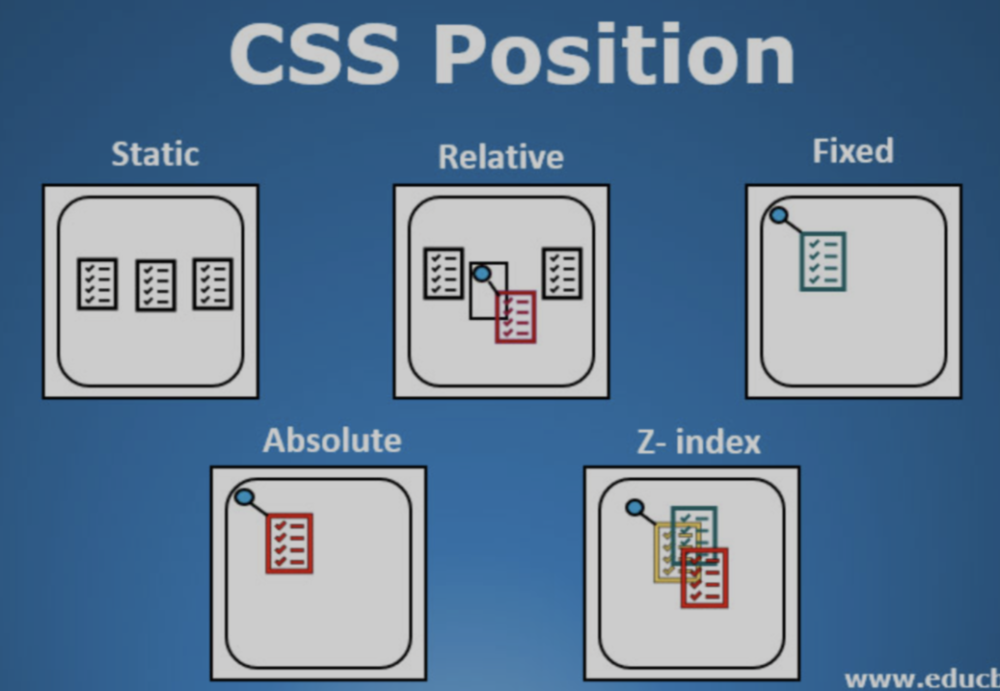
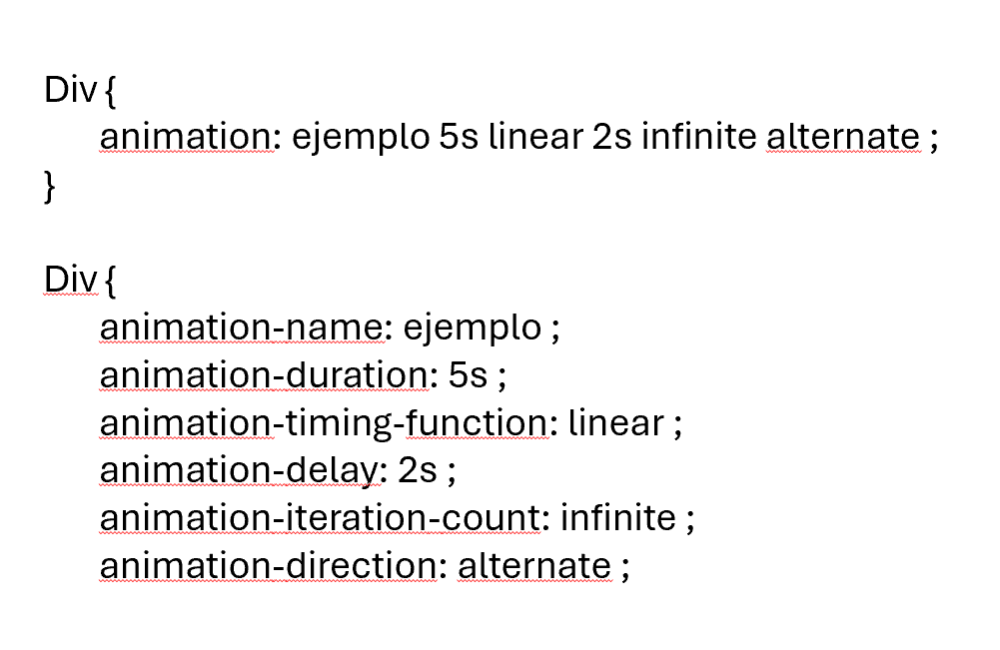

POSITIONS
IDEAS GENERALES
Las propiedades position se usan para controlar cómo se posicionan los elementos en una página web. Cada uno de estos valores permite controlar mejor el diseño y la disposición de los elementos en la página web.
- static: Es el valor predeterminado. El elemento se posiciona de acuerdo con el flujo normal del documento. No se puede modificar con las propiedades top, right, bottom o left.
- relative: El elemento se posiciona en relación con su posición original. Puedes moverlo usando top, right, bottom o left, pero el espacio original del elemento permanece reservado.
- absolute: El elemento se posiciona en relación con su contenedor más cercano que tenga position: relative, absolute o fixed. Se puede mover libremente usando top, right, bottom, o left, y no ocupa espacio en el flujo normal del documento.
- fixed El elemento se posiciona en relación con la ventana del navegador. Permanece fijo en la pantalla incluso cuando haces scroll en la página.
- sticky: Es una mezcla entre relative y fixed. El elemento se comporta de manera relativa hasta que se alcanza un valor de scroll, luego se "pega" en su lugar como un elemento fixed.
APUNTES
Puede mover el div/cuadro, dependiendo del position el espacio de uno podra seguir siendo respetado o no, algunos se sobre ponen sobre otros tmb.
RESUMEN
Te permite mover los cuadros de texto de forma independiente y si estos interactuan con otros o no.
DISPLAY
IDEAS GENERALES
La propiedad display define cómo se debe mostrar un elemento en la página web, afectando su comportamiento y disposición dentro del documento, controla la disposición de los elementos en la página y establecer cómo interactúan con los demás.
- block: El elemento se comporta como un bloque. Ocupa todo el ancho disponible. Se coloca por debajo de otros elementos, generando un salto de línea.
- inline: El elemento se comporta como un elemento en línea (ej. span>, a>, strong>). No ocupa todo el ancho disponible, solo el necesario para su contenido. No genera un salto de línea.
- inline-block: Combina las características de inline y block. El elemento se comporta como inline (no genera salto de línea) pero puedes asignarle un ancho y alto específicos como a un block.
- none: El elemento no se muestra en la página y no ocupa ningún espacio.
- flex: Convierte un contenedor en un contenedor flexible. Sus elementos hijos se colocan en línea o en columna, y se ajustan automáticamente dentro del contenedor. Muy útil para crear diseños adaptativos y alineaciones complejas.
- grid: Define un contenedor de cuadrícula donde los elementos hijos se organizan en filas y columnas. Facilita la creación de layouts más estructurados.
- table: Hace que el elemento se comporte como una tabla HTML, utilizando las reglas de disposición de las tablas.
APUNTES
RESUMEN
Especifica si un elemento es tratado como block or inline element y el diseño usado por sus hijos, como flow layout(Diseño de Flujo), grid(Cuadricula) o flex(Flexible)
ANIMACION
IDEAS GENERALES
La animación en CSS te permite cambiar progresivamente el estilo de un elemento a lo largo del tiempo. Esto incluye propiedades como el tamaño, el color, la opacidad, la posición, etc. Las animaciones CSS son muy útiles para mejorar la experiencia del usuario al agregar transiciones fluidas entre estados. Para que una animación funciones es necesario vincularla primero a un elemento.
- animation-duration: Especifica el tiempo de duración de la animación, sin este no se aplicara la animación. Se puede especificar cuando cambiara usando “to (0% inicio)” y “from (100% completo)”.
- animation-interation-count: Especifica el numero de veces que se repetirá una animación, tmb puede ser infinito.
- animation-delay: Especifica el retraso para el inicio de una animación.
- animation-play-state: especifica si la animación se esta ejecutando (running) o si esta em pausa (paused).
Animation-timing-function: Especifica la curva de velocidad de la animación
- linear: Animación con la misma velocidad de inicio a fin
- ease: Animación de inicio lento, medio rápido y final lento.
- ease-in: Animación de inicio lento solamente.
- esase-out: Animación de final lento.
- ease-in-out: Animacion de inicio y final lento.
- cubic-beizer: Permite determinar valores propios (n, n, n, n)
Animation-direction: Especifica si una animación debe reproducirse hacia adelante, hacia atrás o en ciclos.
- normal: Viene predeterminado y manda a la animación hacia adelante.
- reverse: Reproduce de la animación en dirección inversa.
- alternate: Reproduce la animación hacia adelante y luego hacia atrás.
- alternate-reverse: Reproduce la animación hacia atrás y luego hacia adelante.
Animation fill mode: Especifica un estilo para el elemento cuando la animación no se está reproduciendo.
- none: Viene predeterminado, la animación no aplicara un estilo aantes o después de ejecutarlo.
- forwards: El elemento tendrá los valores de estilo establecido por el ultimo fotograma clave.
- backwards: El elemento tendrá los valores de estilo establecido por el primer fotograma clave.
- both: La animación seguirá las reglas para adelante como para atrás.
APUNTES

RESUMEN
Te permite animar los cuadros de texto ya sea en vertical, horizontal o en otras formas crativas.
PROPIEDADES CSS3
IDEAS GENERALES
Para alguna propiedades se deben de usar prefijos como -moz, -o y -webkit para que funciones en distintos navegadores.
- border radius: Genera esquinas redondeadas para el elemento caja. Posee dos parámetros los cuales son vertical y horizontal. (Los valores deben ser separados por una barra)
- box Shadow: Crea sombras para el elemento caja. Puede tomar hasta 5 parametros para generar una sombra interna. Los desplazamientos pueden ser negativos. Los valores Iluminacion e inste son opcionales.
- text Shadow: Similar al box-shadow pero para textos. Los parámetros que toma son el color, desplazamiento horizontal o vertical y defuminacion.
- @fontface: Permite recargar y usar cualquier fuente que integremos. Se le proveer nombra con Font-family.
- linear-gradient: El punto de inicio determina el angulo en el que se realiza el degradado. Se pueden implementar múltiples colores.
- border Image: Genera esquinas redondeadas para el elemento caja. Se declara previamente con border o border-with. Toma como parámetros la url, tamaño de imagen y una palabra clave.
- transitions: Transición entre dos estados de un elemento. Toma como parámetros la propiedad afectada, tiempo de duración, palabra clave y un valor de retardo.
- transform: Rotate para rotar el elemento en grados. Skew para tirar un elemento en dos grados. Translate mueve un objeto tanto como sus parámetros le indiquen. Scale para expandeiro disminuir un elemento.
APUNTES
En CSS, las propiedades personalizadas (también conocidas como variables) son entidades definidas por autores de CSS que contienen valores específicos que se pueden volver a utilizar en un documento.
RESUMEN
Son entidades definidas por autores de CSS que contienen valores específicos que se pueden volver a utilizar en un documento.
REFERENCIAS AVANZADAS
IDEAS GENERALES
- :nth-child(odd) inth-child (even): Las palabras clave odd y even se utilizan para seleccionar elementos con base en su posición en la secuencia de hijos, específicamente para alternar entre elementos impares y pares.
- :first-child: Existen otras importantes pseudoclases relacionadas con esta última. La pseudoclase first-child referencia solo el primer hijo.. Estas pseudoclases en particular no requieren palabras clave o parámetros.
- :last-child: La pseudoclase last-child reterencia solo el último hijo. Estas pseudoclases en particular no requieren palabras clave o parametros.
- :not(): La pseudoclase not() nos permite declarar una excepción. Los estilos en la regla creada con esta pseudoclase serán asignados a todo elemento excepto aquellos incluidos en la referencia entre paréntesis. En lugar de la palabra clave de un elemento podemos usar cualquier otra referencia que deseemos.
Selector de atributo:
Un selector de atributo en CSS selecciona elementos HTML en función de la presencia o el valor de uno de sus atributos. Esto permite aplicar estilos a los elementos que tienen un atributo específico, o cuyo atributo tiene un valor determinado.
- [atributo^="inicio"]: Una regla con el selector (^=) selecciona elementos cuyo atributo comienza con un valor específico.
- [atributo$="final"]: Una regla con el selector ($=) selecciona elementos cuyo atributo termina con un valor específico.
- [atributo*="cadena"]: Una regla con el selector (*=) selecciona elementos cuyo atributo contiene una cadena específica en cualquier posición.
APUNTES
Te permite resaltar la un renglon en particular (dependiendo el codigo)
RESUMEN
Te permite resaltar la un renglon en particular (dependiendo el codigo)